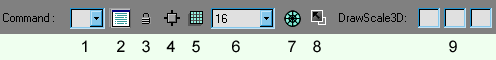

UnrealEd Console
Commands for UnrealEd 3's Console Bar. See also UnrealEd 2 Console.

UnreaEd 3 console bar |
The commands can be entered either upper case or lower case. The list of previously used commands (in the current session) are saved in a drop down list, that can be conveniently re-selected (Click >> Enter), so commonly used commands can be quickly re-activated. Be sure that the correct object is selected before entering command. Also, tool bar buttons can be user created for any of the commands listed here. Many of these commands are seldom used, but can be handy when making large scale systemic alterations to a level (numerous repeat operations).
Commands can be bound to Custom Toolbox Buttons or keys. See binding editor commands. See also UnrealEd interface.
Look for lines in Editor.log that start with "Cmd:" to find out about more possibly interesing console commands.
Actor Commands
- ACTOR REPLACE
- beware of this adding extra properties you don't want! See
 146410
146410
Brush Commands
- BRUSH MERGEPOLYS
- Merge coplanar polygons on a brush
- BRUSH SEPARATEPOLYS
- Separate coplanar polygons on a brush
Fluid Commands
- FLUID REBUILD
- ?
Light Commands
- LIGHT APPLY SELECTED= CHANGED=
- Rebuild lights
Map Commands
- MAP SENDTO SWAP
- Swap order of TWO SELECTED brushes
- MAP SAVEPOLYS FILE= MERGE=
- Seems to be exporting the polys only
- MAP CHECK
- Tools → Check Map for errors
- MAP SCALE FACTOR= ADJUSTLIGHTS= SCALESPRITES= SCALELOCATIONS= SCALECOLLISION=
- Tools → Scale Map
Paths Commands
- PATHS REVIEW
- Tools → Review paths
Select Commands
- MAP SELECT ADDS
- selects all additive brushes in the map
- MAP SELECT FIRST
- select the first created brush in the level
- MAP SELECT LAST
- select the last created brush in the level
- MAP SELECT NONSOLIDS
- selects all nonsolid brushes in the map
- MAP SELECT SEMISOLIDS
- selects all semisolid brushes in the map
- MAP SELECT SUBTRACTS
- selects all subtractive brushes in the map
- SELECT NONE
- Deselect any and all selected actors (it is a common error to inadvertently select an actor when moving mouse across one of the view screens).
- ACTOR SELECT ALL
- selects all brushes / actors within the map
- ACTOR SELECT DELETED ???
- ACTOR SELECT INSIDE
- selects all brushes / actors within the builder brush
- ACTOR SELECT INVERT
- inverts the state of selected to unselected or vise versa
- ACTOR SELECT NONE
- deselect the selected actors
- ACTOR SELECT OFCLASS CLASS=<CLASS>
- selects all actors of a class
- ACTOR SELECT OFSUBCLASS CLASS=<CLASS>
- selects all actors of a class or subclasses. Eg use with "TournamentWeapon" to select all weapons.
StaticMesh Commands
- STATICMESH FROM SELECTION PACKAGE= NAME= GROUP=
- Converts brush to static mesh
- STATICMESH TO BRUSH
- Converts staticmesh to brush
- STATICMESH REBUILD
- ?
- STATICMESH ALLREBUILD
- ?
- STATICMESH SMOOTH
- ?
- STATICMESH UNSMOOTH
- ?
- STATICMESH SAVEBRUSHASCOLLISION
- Save selected brush as collision for staticmesh
Poly Commands
- POLY BEVEL DEPTH= BEVEL=
- Context Menu → Bevel
- POLY EXTRUDE DEPTH=
- Context Menu → Extrude
- POLY SET SETFLAGS=
- Set polyflags
- POLY SET CLEARFLAGS=
- Clear polyflags
- POLY SET TEXTURE=
- Set Texture
Stat Commands
- LSTAT
- Lightmap stats
- STAT foo
- display different statistics about the display, where foo is one of...
- ALL – toggles display of all categories
- ANIM – toggles animation statistics display
- AUDIO – toggles audio statistics display
- DEFAULT – Resets all displays to default visibility
- FPS – toggles framerate statistics display
- GAME – toggles game statistics display
- HARDWARE – toggles hardware statistics display
- HISTOGRAPH – toggles histograph statistics display
- LIGHT – toggles dynamic light statistics display
- MATINEE – toggles matinee statistics display
- NET – toggles network statistics display
- NONE – turns off all displays
- RENDER – toggles rendering statistcs display
- RESET – same as DEFAULT
- XBOXMEM – toggles XBox memory statistics display
"POLY TEXSCALE" and "POLY TEXPAN" work. (TexAlign Works in UED3  )
)
No longer works
Commands from UEd 2 that don't work in 3. Anyone know if there are new equivalents?
- POLY TEXINFO
- POLY TEXALIGN FLOOR and POLY TEXALIGN WALLDIR